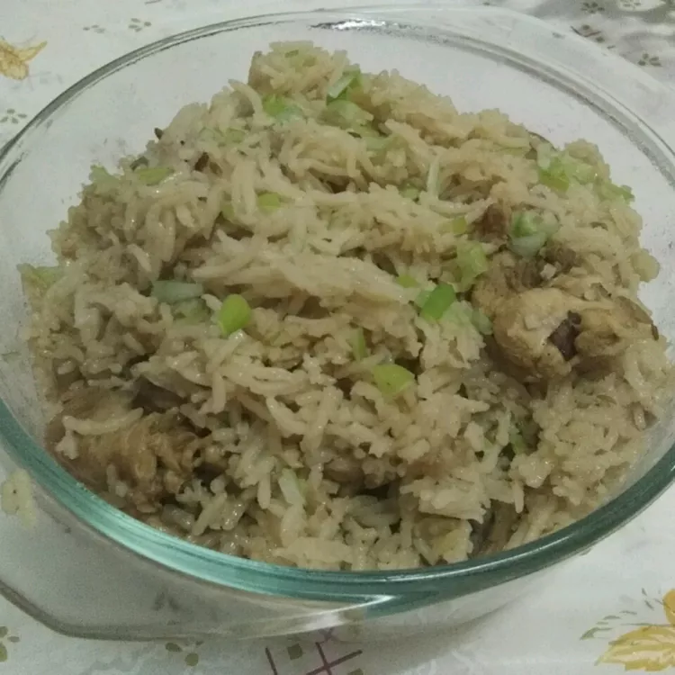

home
Biryani

Ingredients
- 10 black peppercorns
- 6 whole cloves
- 5 cardamom pods
- 2 cinnamon sticks
- 2 whole star anise pods
- half teaspoon kala jeera (black cumin seeds)
- 1 bunch fresh cilantro leaves
- 1 bunch fresh mint leaves
- 1 cup plain yogurt
- 2 teaspoons lemon juice
- 2 teaspoons ginger-garlic paste
- 2 teaspoons chili powder
- 1 teaspoon biryani masala powder (such as Dunya)
- half teaspoon ground turmeric
- 1 pound chicken thighs
- 3 half cups water
- 2 half cups basmati rice
- 4 bay leaves, divided
- half cup warm milk
- 1 pinch saffron threads
- half cup ghee (clarified butter), divided
- 2 onions, thinly sliced
- 2 green chile peppers, chopped
Steps
- Place black peppercorns, cloves, cardamom, cinnamon sticks, star anise, and kala jeera into a spice grinder; grind to a fine powder.
- Place cilantro and mint leaves in the bowl of a food processor; pulse until coarsely chopped.
- Combine spice powder, cilantro-mint mixture, yogurt, lemon juice, ginger-garlic paste, chili powder, biryani masala powder, and turmeric in a large glass or ceramic bowl. Add chicken; toss to evenly coat. Cover bowl with plastic wrap and marinate in the refrigerator, about 2 hours.
- Bring water and rice to a boil in a saucepan; add 2 bay leaves. Reduce heat to medium-low, cover, and simmer until rice is partially cooked through and still firm, about 5 minutes. Drain; set aside.
- Combine milk and saffron in a small bowl; stir and set aside.
- Heat ghee in a large pot with a tight-fitting lid over medium-high heat. Add onions; cook and stir until golden brown, about 15 minutes. Drain on paper towels; set aside.
- Reduce heat to low. Add remaining 2 bay leaves and chile peppers; cook and stir until fragrant, 1 to 2 minutes. Carefully transfer 1 tablespoon ghee from the pot to a small bowl; set aside.
- Remove chicken from marinade, wiping excess marinade off; add chicken to the pot. Discard remaining marinade. Cook over medium heat until no longer pink, about 2 minutes per side; spread rice on top, then sprinkle on onions. Drizzle reserved ghee and saffron milk over rice and onions.
- Cover the pot; cook over high heat, about 8 minutes. Reduce heat to low; continue cooking, about 5 minutes. Remove from heat; let stand, covered, until rice is tender and an instant-read thermometer inserted into the thickest part of chicken reads 165 degrees F (74 degrees C), about 15 minutes more.